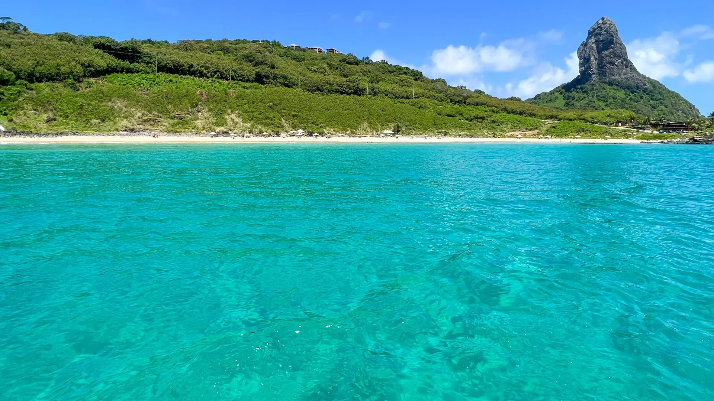

Passeio Hisórico
Muitas controvérsias marcam o descobrimento do arquipélago pelos europeus. Pelo menos três nomes — São Lourenço, São João e Quaresma — têm sido associados com a ilha na época de sua descoberta. O que se sabe como certo é que várias expedições alcançaram a costa brasileira entre 1500 e 1503 e que a existência do arquipélago era conhecida em Lisboa pelo menos desde antes de 16 de janeiro de 1504, quando o rei D. Manuel I de Portugal fez mercê da "ilha de São João" a Fernão de Loronha — cavaleiro da Sua Casa, cristão-novo, grande comerciante e armador — como uma capitania hereditária, citando o beneficiado [com ou sem razão] como descobridor da ilha.
